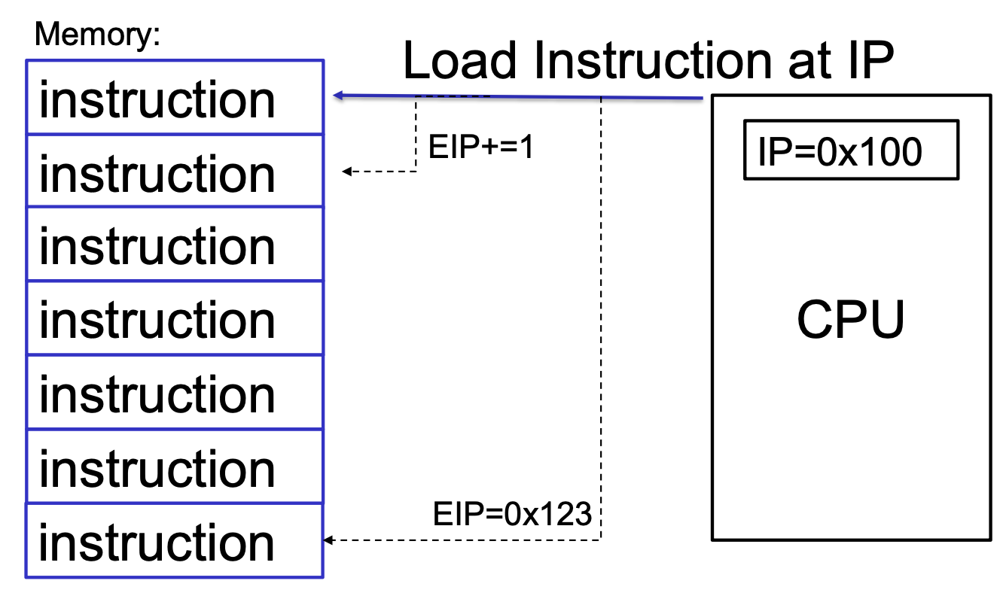
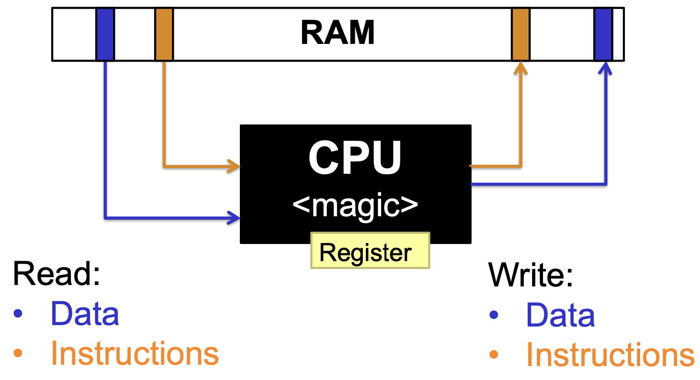
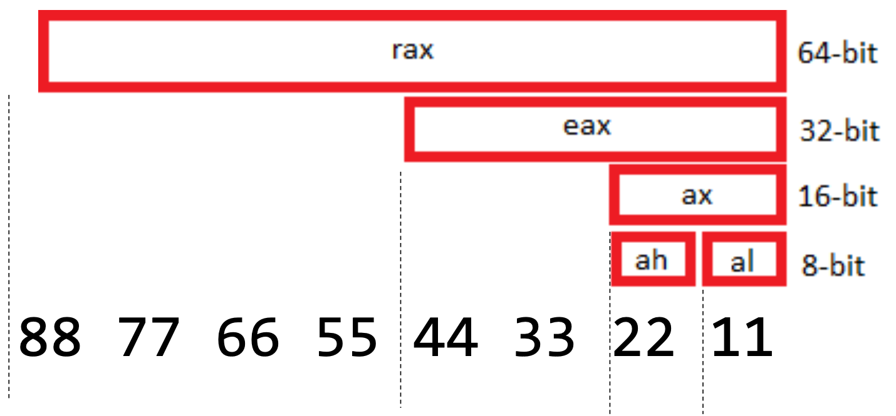
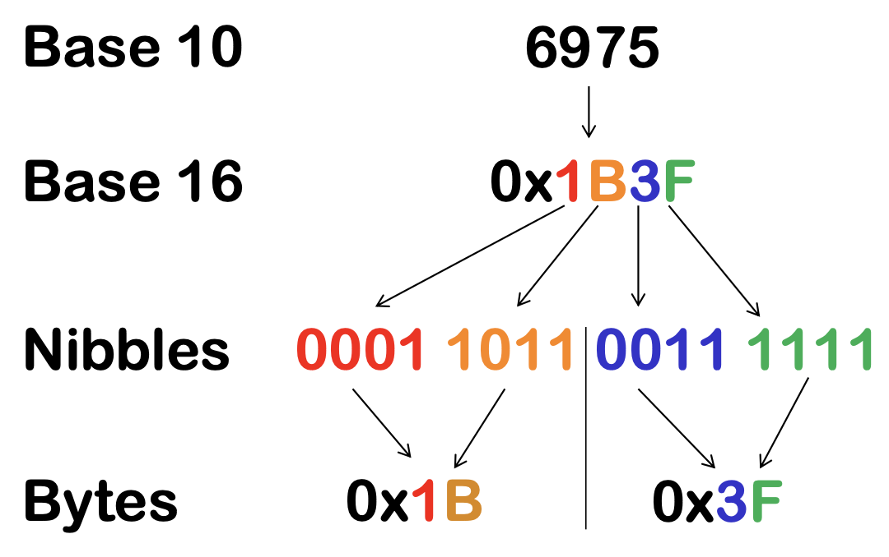
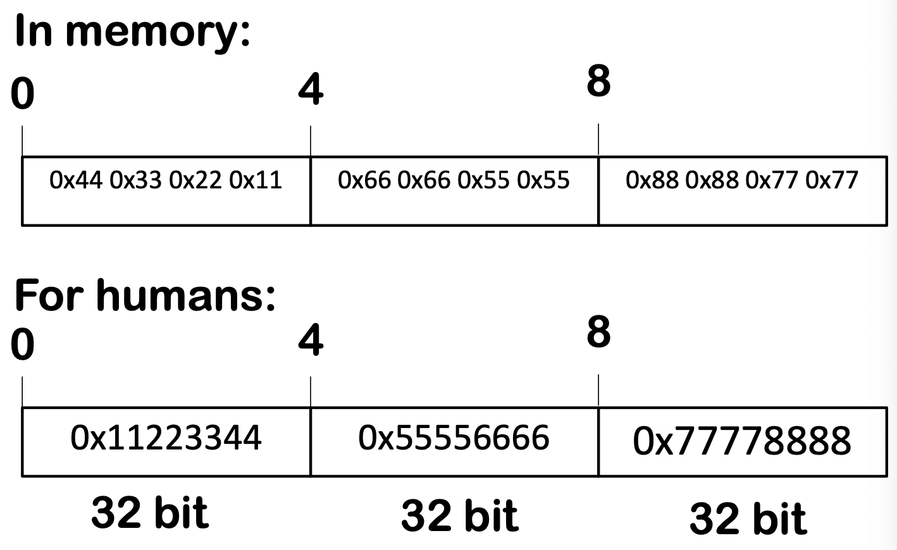

Computer Science Basics¶
links: ED TOC - Intel Architecture - Index
Overview Computers¶
Computers operate using the von Neumann architecture, where the CPU reads and writes data and instructions from and to RAM. The CPU fetches instructions from memory, increments the instruction pointer (IP), and executes the instructions. This cycle allows for the sequential execution of programs.

Von Neumann architecture

- Von Neumann Architecture: Single memory space (RAM) for instructions and data, simpler design, potential bottleneck in operation speed.
- Harvard Architecture: Separate memory spaces for instructions and data, more complex design, generally faster operation due to parallel access.
The von Neumann architecture remains popular today due to its simplicity, flexibility, compatibility, and established ecosystem. Despite its bottleneck limitation, technological advancements have mitigated its impact, making von Neumann systems effective for many applications.
CPU Registers¶
Registers are fast, small storage locations within the CPU used for immediate data access. They can store data, memory addresses, and control information, and are crucial for performing computations, reading/writing memory, and executing instructions. It's not possible to write from memory to the memory directly. Always done over a register. Common registers include:
| 32-bit | 64-bit | Acronym | Function |
|---|---|---|---|
| EAX | RAX | Accumulator | Accumulator for arithmetic operations |
| EBX | RBX | Base | Base register for addressing |
| ECX | RCX | Count | Counter for loops |
| EDX | RDX | Data | Data register |
| ESI | RSI | Source Index | Source index for string operations |
| EDI | RDI | Destination Index | Destination index for string operation |
| EIP | RIP | Instruction Pointer | Next instruction to be executed |
| ESP | RSP | Stack Pointer | Top of Stack |
| EBP | RBP | Base Pointer | Current Stack Frame (Bottom) |
| R8-R15 | General Purpose |
Registers and their sizes:

Cycles needed to access data:
- Register: <1 cycle
- L1: ~3
- L2: ~14
- RAM: ~240
Recap:
- CPU work with registers
- Registers can hold data
- Registers can also hold addresses of memory locations (to write/read data)
- They can be 32 bit (EAX) or 64 bit (RAX)
- Some registers are multi-purpose
- Some registers are special (RIP, RBP, RSP)
CPU Instructions¶
The CPU executes instructions in a fetch-decode-execute cycle. Instructions are represented by opcodes in machine code and can perform operations like addition, subtraction, data movement, and logical operations. Assembler languages provide mnemonics for these opcodes to make programming more accessible
The pseudo code of a CPU could look like this:
instr = [ 0x01 0xA0 0xB0 0x02 0xA1 0xA2 .. ]
ip = 0
while true:
switch instr[ip]:
case 0x01:
add( instr[ip+1], instr[ip+2] )
ip = ip + 3
break
case 0x02:
sub( instr[ip+1], instr[ip+2] )
- Assemble/compile \(\rightarrow\) Transform Assembler Instructions to CPU Opcodes
- Disassemble \(\rightarrow\) Get Assembler Instructions from CPU Opcodes
Numbers¶
1 byte = 8 bit for Intel CPU's. Same for ARM and RISC.
Numbers in computing can be represented in various formats:
- Decimal: Base 10.
- Hexadecimal (Hex): Base 16, used for memory addresses and binary data representation.
- Endianness: Defines byte order in memory. Intel CPUs use little-endian format, where the least significant byte is stored at the lowest memory address. ARM and RISC use big-endian.

- Big Endian:
0x1B0x3F\(\rightarrow\)0x1B3F - Little Endian:
0x3F0x1B\(\rightarrow\)0x3F1B
How 96 bits are stored in memory (Little Endian):

We need to interpret those numbers in the memory
- If we look at numbers in memory, we can’t know if they are 8, 16, 32 or 64 bit
- We can try to interpret bytes as ASCII
OS Basics¶
Operating systems manage hardware resources and provide an interface for user applications. Key concepts include:
- Rings: Protection layers separating user space (Ring 3) from kernel space (Ring 0). Syscalls are used to interact with the kernel.
- Processes (interpreted, alive): Independent programs (static, dead) running in memory, each thinking it owns the entire system. Processes can be created, scheduled, and managed by the OS.
- Memory Management: Processes have virtual memory spaces managed by the OS, typically 4GB in a 32-bit system. The mapping between physical pages and virtual memory is done via MMU (Memory management unit) / TLB (Translation lookaside buffer). This mapping is called paging.
Why 4GB memory
- 32 bit register size in (old) Intel CPU
- Register are used to address memory
- \(2^{32}\) = 4 billion = 4 gigabyte
How can multiple programs run at the same time?
By using Interrupts:
- Timer interrupts
- Interrupts are handled by the kernel "callbacks"
- Time / clock
- Network interface
- USB devices
- Kernel schedules the different processes
32 bit vs 64 bit¶
The transition from 32-bit to 64-bit architecture introduced several changes:
- 64-bit systems: Can address more than 4GB of memory, theoretically up to 18 exabytes (\(2^{64}\)).
- Only 47 bit are used (=140 terabytes)
- 57 bit is coming
- Registers: Expanded from 32-bit to 64-bit, allowing for more data to be processed per instruction.
- Compatibility: 64-bit operating systems can run 32-bit applications, requiring a 32-bit runtime environment. However, 64-bit applications can take advantage of larger address spaces and improved performance.
Data measurements¶
Binary system¶
| Name | Factor | Value in Bytes |
|---|---|---|
| kibibyte (KiB) | \(2^{10}\) | 1'024 |
| mebibyte (MiB) | \(2^{20}\) | 1'048'567 |
| gibibyte (GiB) | \(2^{30}\) | 1'073'741'824 |
| tebibyte (TiB) | \(2^{40}\) | 1'099'511'627'776 |
| pebibyte (PiB) | \(2^{50}\) | 1'125'899'906'842'624 |
| exbibyte (EiB) | \(2^{60}\) | 1'152'921'504'606'846'976 |
| zebibyte (ZiB) | \(2^{70}\) | 1'180'591'620'717'411'303'424 |
| yobibyte (YiB) | \(2^{80}\) | 1'208'925'819'614'629'174'706'176 |
Binary system¶
| Name | Factor | Value in Bytes |
|---|---|---|
| kilobyte (KB) | \(10^{3}\) | 1'000 |
| megabyte (MB) | \(10^{6}\) | 1'000'000 |
| gigabyte (GB) | \(10^{9}\) | 1'000'000'000 |
| terabyte (TB) | \(10^{12}\) | 1'000'000'000'000 |
| petabyte (PB) | \(10^{15}\) | 1'000'000'000'000'000 |
| exabyte (EB) | \(10^{18}\) | 1'000'000'000'000'000'000 |
| zetabyte (ZB) | \(10^{21}\) | 1'000'000'000'000'000'000'000 |
| yottabyte (YB) | \(10^{24}\) | 1'000'000'000'000'000'000'000'000 |
links: ED TOC - Intel Architecture - Index